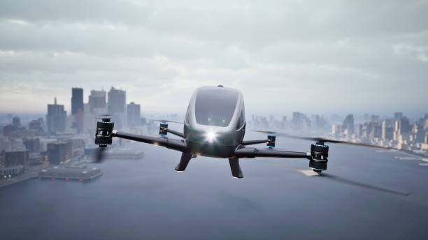

World Renowned Flying Taxi Service!
Winged Transit is a pioneering flying taxi company offering fast and reliable short-distance air travel for everyday passengers. By operating a fleet of small aircraft designed for quick take-offs and landings, we provide an alternative to traditional road transport, reducing commute times and avoiding traffic congestion. Whether it’s city-to-city travel or regional transfers, our air taxis combine the speed of a plane with the flexibility of a helicopter, making travel more efficient, accessible, and convenient than ever before.
Enquire
